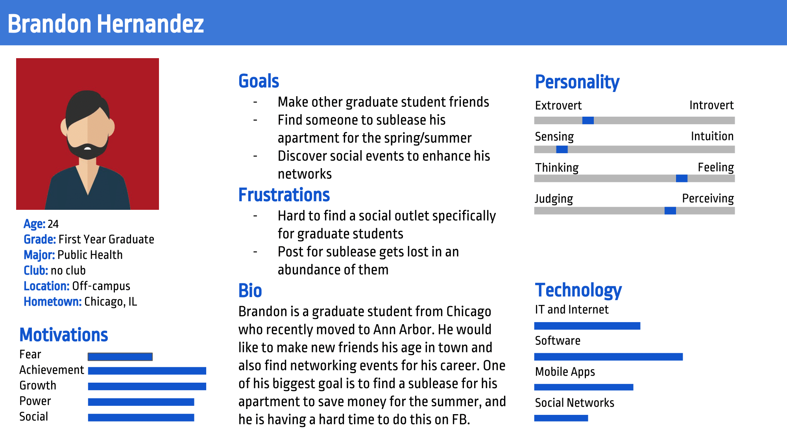
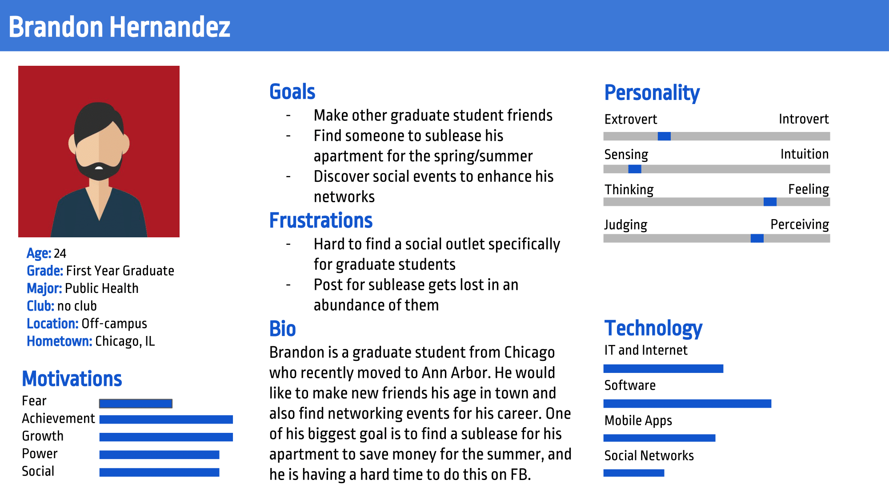

ShareU
College 101: How to stay in the information loop
ShareU provides a solution for difficulty spreading information on campus for university students. Our app organizes information such as events, clubs, tickets, textbooks, housing to verified students in one centralized platform. Not only can students sell and exchange items, but they can learn about events and clubs and become more involved in their campus community.
Research
We started with competitive analysis based on our design problem statement: "There is difficulty spreading information about new clubs on campus, club information sessions, events, fundraisers, resources, etc. Additionally, if you wanted sell a textbook or a football ticket, there is no platform that exists to express or post this information." We took a critical look at existing systems within our context and articulated what their deficiencies are in respect to supporting our target activity. We complied a list of problems of current solutions to our problem.
User Personas & Scenarios

 


Scenario # 1
Jon is a freshman from LA. He is both excited and nervous to start his life in college, but most importantly, he is looking forward to going to the football games. He wants to go to the game against MSU on October 20th, but doesn’t have a ticket yet. In order to buy a ticket from another student, he opens ShareU and goes to the student buy and sell section. He is able to select the ‘football ticket’ category and the ‘MSU game’ tag to find all the offerings for the ticket. Then he sorts the offers by price, where he finds the cheapest ticket for $30. He clicks the seller’s profile and quickly scans it for any signs of scamming, and messages the seller to buy the ticket. Once the seller responds, he arranges to meet on campus to buy the ticket from him.
Scenario # 2
Mary Perry is a senior who recently moved from into a newly furnished apartment. Since the couch in her previous apartment was hers, she wants to get rid of it by selling it to another student on campus. She takes a picture of the couch and opens ShareU to make a post on the ‘buy and sell’ section. She makes a new post, selects the “furniture” category, uploads the picture, and writes a short description regarding its condition. She then adds the “couch” tag and submits the post. Now she will wait until another student sees the post and messages her about the offer.
Alternative Sketches
To think about different ways to solve the problem and to create storyboards, I created 40 different alternative sketches. It was difficult to come up with as many as 40 of them, but it allowed me to think outside of the box to come up with creative solutions.

Paper Prototype
First Attempt
The video on the left shows our first version in stop motion. After conducting usability testing, we were able to improve our first version by considering the feedback and fixing our defects. Our participants had common suggestions as well as their personal comments to improve our prototype. All three usability tests went smoothly with the unique input from each participant. The third one went quicker than the first one because we got used to the process and adapted to the roles that we were assigned to. Here are some of our main defects and challenges:
- Categories to Tickets
Our first defect was clicking the categories menu during the test. We originally made our users click on it to show them that they can access the categories by clicking the icon in the menu bar. However, we made the users press the back button instead of prompting to do anything more. We did not carry out our scenario fully. To fix this problem, we decided to add a “Tickets” feed that displays when the user presses the “Tickets” menu on the categories screen. This also helped us develop the interaction within our scenario, building the user story to first the user researching for a ticket to see the different prices, then to creating a post to sell a ticket. Another reason we need the “Tickets” screen is to show the users where the application transitions to once they submit a post about selling a ticket. - Search Results
Another missing part of our prototype was the “Search Results” page. The users could search for an item, but our prototype didn’t have a page that would show the search results. This lack of feedback confused our participants. To fix this issue, we created a page that contains their search results by the search terms. This was designed to be similar to the home screen with feeds, but the search terms would also be highlighted to indicate that the results contain that word. To distinguish the sort/filter icon from the categories icon, we changed the sort/filter icon to a funnel icon instead of a three horizontal lines. - Minor defects
One of the defects with minor severity was the missing badge icon for messages. We thought that when the user receives a message in their inbox, displaying a notification with a number that shows how many new messages they received would be helpful. We also got feedback that colors that we selected for certain functions were confusing. For example, if we were to select a different color for a button, we have to keep the color consistent throughout the whole application so that the color has a purpose. We moved away from this to create a more consistent design in terms of color coordination.
Final Lo-Fi Prototype
We got great feedback on the interaction of the application and also the content issues that were confusing. From our first attempt, this version is more thorough and detailed. The replicating and filming process was also went smoother.
Digital Prototype
When creating hi-fi prototypes, we worked in the order of menu bar: Home, Browse, Post, Inbox, and Profile.
- Home: Our main focus was the different representation of information depending on the categories.
- Browse: We created 3 Browse screens to show different types of post for tickets, clubs, and events.
- Post: We only created one type of post—Tickets—to emphasize the simple steps of creating a post. We focused on what information the users will require in buying/selling tickets online.
- Inbox: We simplified the messaging feature as much as possible to have strong and straightforward affordance.
- Profile: Profile has your own profile and other's profile. Users should have the option to hide their information from the public so we eliminated a few pieces of information but maintained the reviews and ratings for both profile screens.
What makes our app so special? — Good question.
Our app primarily centralizes all information needed to stay in the loop in college. The organized categorization makes it easier for users to find and post information, unlike current existing solutions such as the Facebook groups. It also only accepts verified college students for their specific campuses, ensuring a secure space for communication. It doesn’t just give college students the opportunity to buy or sell items but to really get involved with their community through shared events and campus activities. This inspires new friendships and fosters other relationships with their fellow classmates.